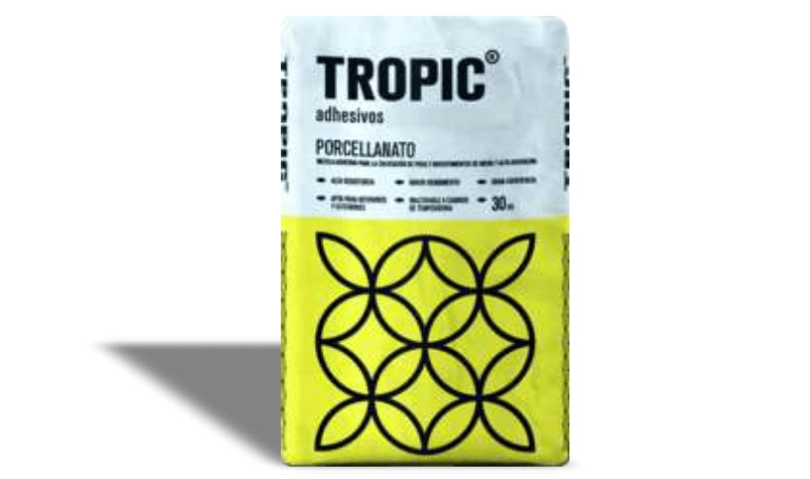
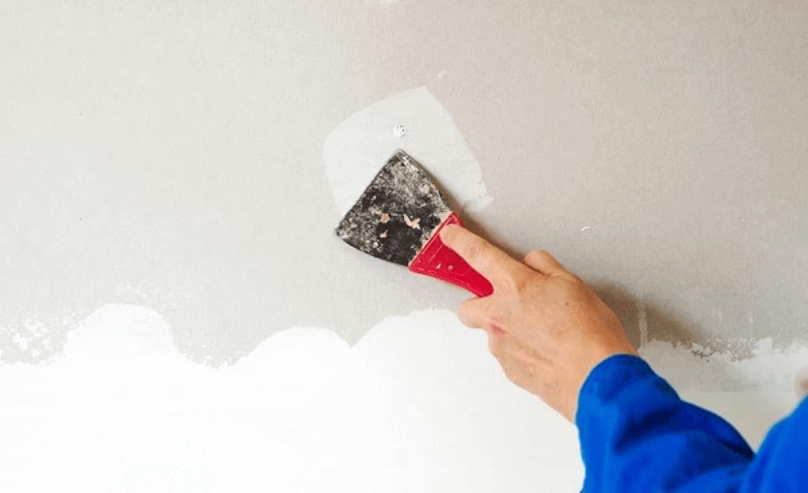

Tropic Porcelanato
Polvo fino de color gris cemento, en bolsas de 30kg que puede ser almacenado hasta 6 meses a partir de la fecha de fabricación. Posee una base química de ligantes hidráulicos, aditivos y arenas de granulometría controlada.


Caracteristicas
- Resistencia al envejecimiento excelente
- Resistente a solventes y aceites
- Resistente a la adhesión por tracción
- Cumple con los requisitos según IRAM 45064
Usos
El porcelanato se ha convertido en un material muy buscado y utilizado por decoradores, y constructoras para crear un sinfín de ambientes con acabados de lujo, óptima calidad y gran resistencia.
Modo de Aplicación
El porcelanato se puede aplicar en cualquier tipo de revestimiento ya existente. Una vez aplicada la capa de porcelanato, el tiempo de secado es aproximadamente de 8 horas a una temperatura ambiente de 20ºc.